Islamic
Dome & carved screensThe most ornate of the five structures — a domed heritage pavilion with carved arches and mashrabiya screens, recreating the classic vocabulary of Islamic Cairo in wood.
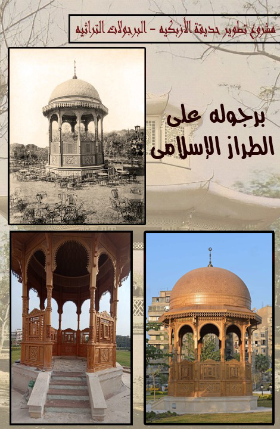
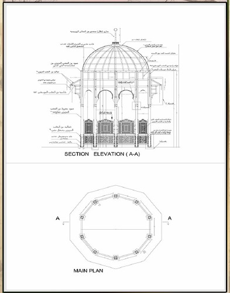

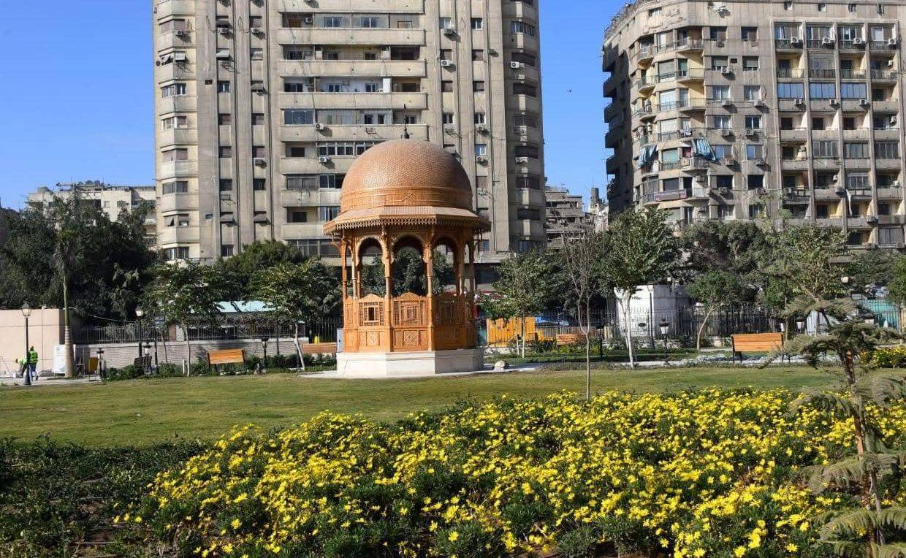
Heritage Restoration · Woodwork
Restoring the character of one of Cairo's historic landmarks through traditional craftsmanship and contemporary fabrication.
All ProjectsIn the heart of Cairo, Al Azbakeya Park stands as one of the city's oldest and most historically significant gardens — a place closely connected to the architectural development of Khedivial Cairo.
The park's revitalization was about more than creating new structures. It was about restoring the architectural identity, historical character, and spirit of a place that has been part of Cairo's history for generations. Within this effort, the heritage pergolas of Al Azbakeya were recreated — bringing back a defining element of the park's character.
The heritage pergolas were an important part of the architectural character of the renewed park. As one of Cairo's historic public gardens, Al Azbakeya holds a place in the city's collective memory, and its pergolas were created to reflect that heritage.
As part of the park's major revitalization, Cairo International for Decoration and Construction was entrusted by The Arab Contractors (Osman Ahmed Osman & Co.) as a subcontractor for the manufacturing and execution of the heritage pergolas.
For our team, the assignment carried a clear responsibility: recreating structures that would feel at home in one of Cairo's most historic settings.
Recreating these structures was not simply a matter of manufacturing wooden elements. Each pergola began with a historical reference, was translated into a detailed design, and was then fabricated, finished, and installed in the park as a completed structure.
Our engineers and craftsmen worked from the available historical references and the architectural language of each pergola, maintaining the proportions, details, and visual character of the originals — combining traditional woodworking with modern engineering and manufacturing capabilities.
In the following chapter, each pergola is presented through its three stages: the reference it was built from, the design prepared from it, and the completed result standing in the park today.
The park's pergolas follow five distinct stylistic traditions. Each one was recreated through the same three-stage journey — from historical reference, to design, to the finished structure standing in the park today.
The most ornate of the five structures — a domed heritage pavilion with carved arches and mashrabiya screens, recreating the classic vocabulary of Islamic Cairo in wood.


Defined by clean lines and a calm, low horizontal profile — the quiet restraint of Japanese timber construction, executed in wood.
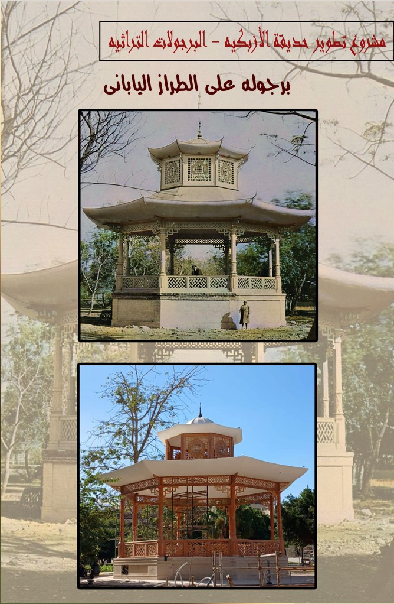
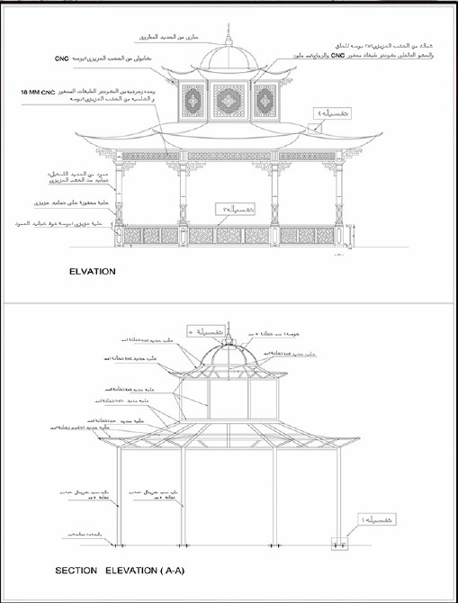
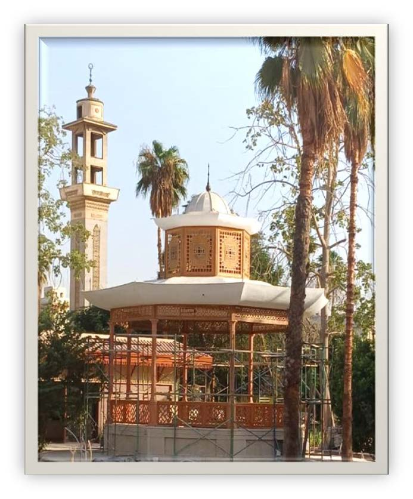
Inspired by the pavilions of Asian gardens, with softly curved rooflines and an open timber structure that keeps a light, graceful presence in the landscape.
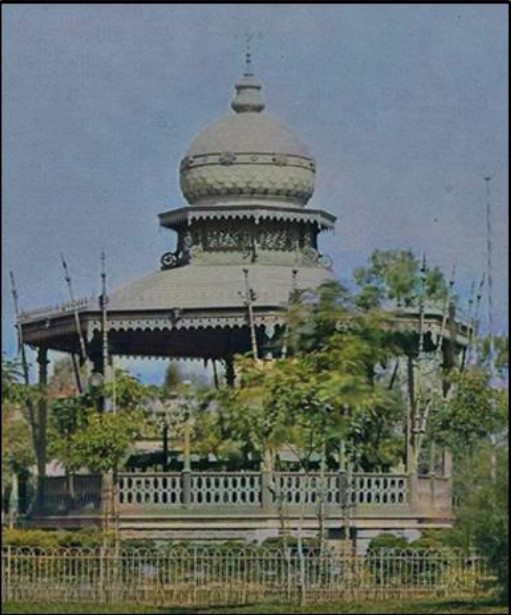
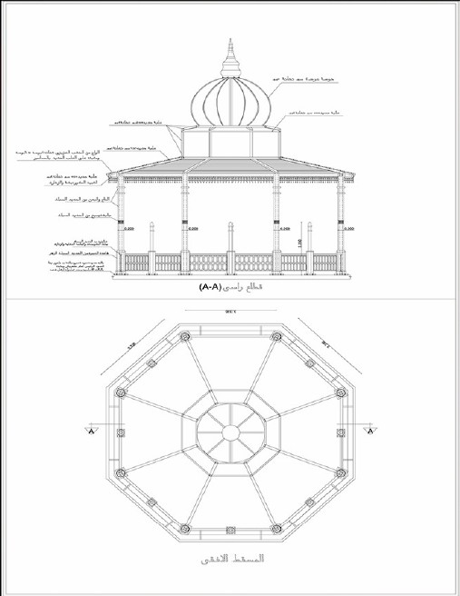
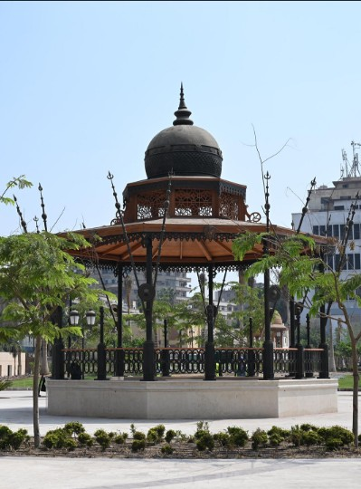
Built on the classical proportions of French garden architecture — symmetry, balanced rhythm, and refined detailing throughout the structure.
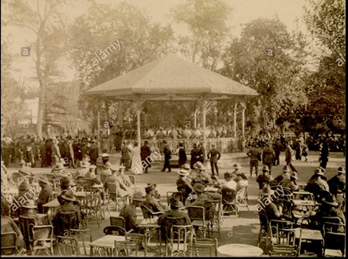
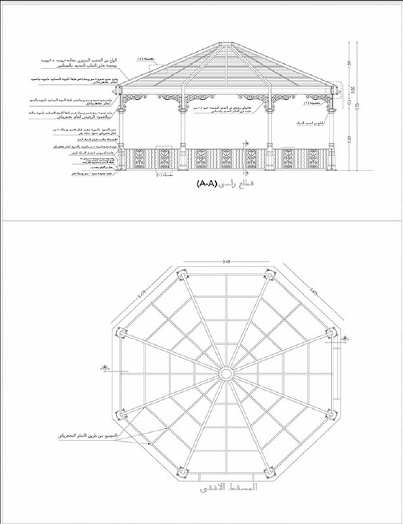
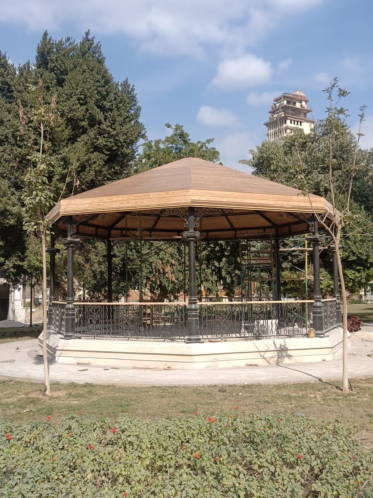
An organic, playful structure designed to blend with the park's planting — a lighter, greener note within the collection of five pergolas.
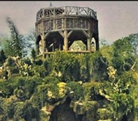
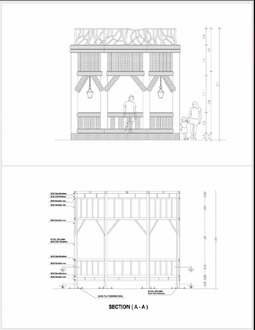
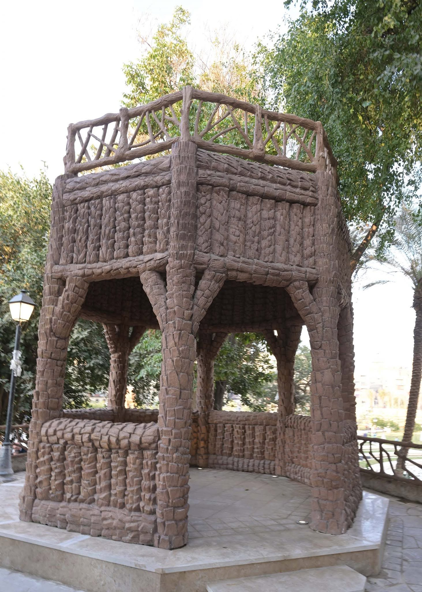
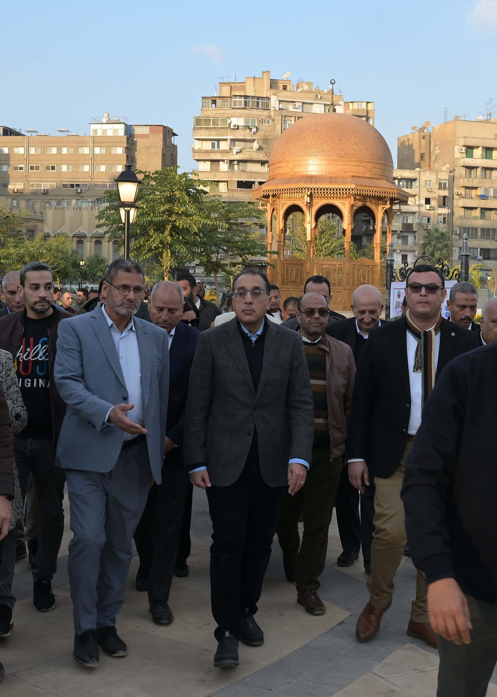
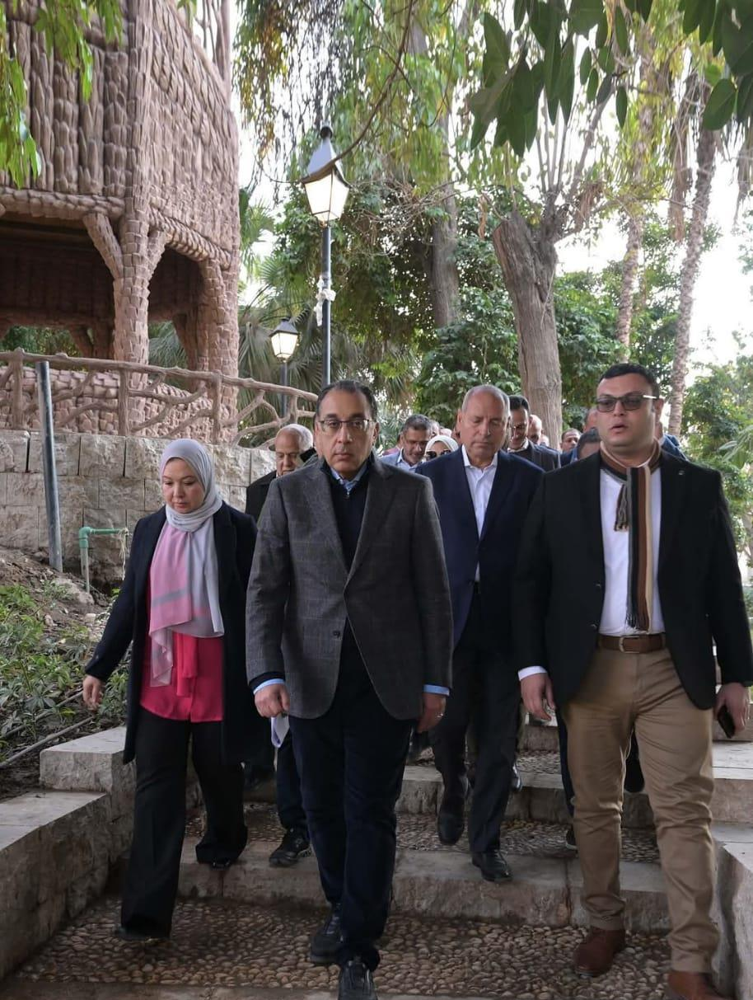
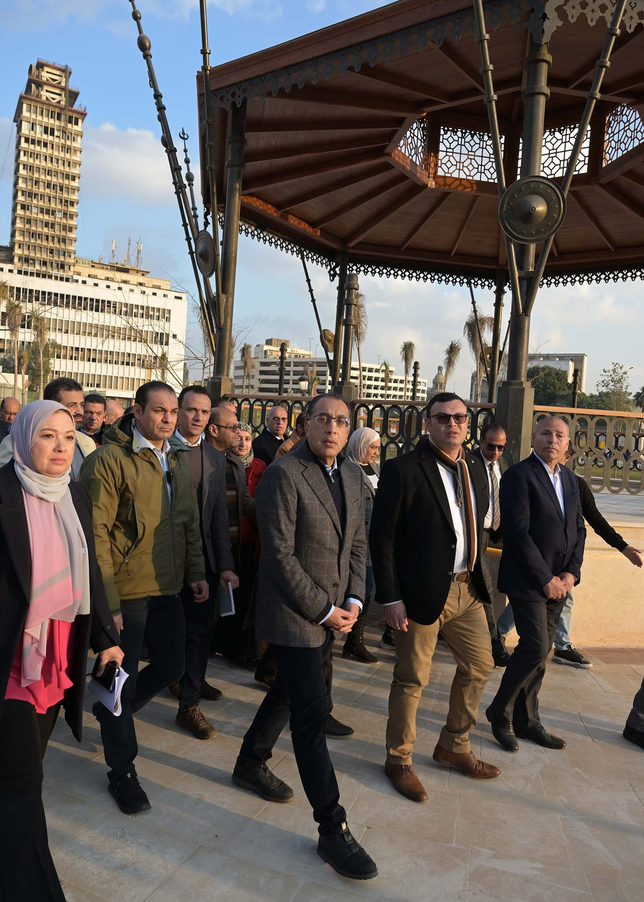
The completion of the project was marked by an official visit to Al Azbakeya Park headed by the Prime Minister, presenting the renewed park and its recreated heritage structures.
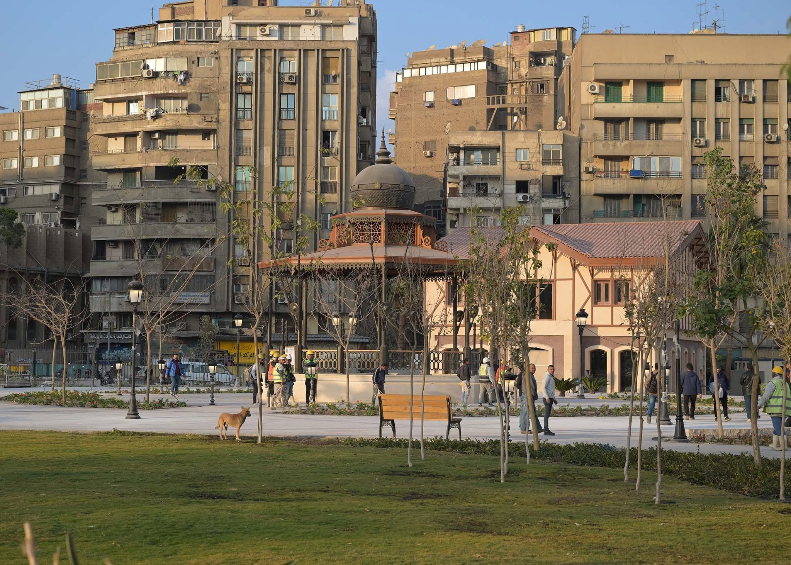
The completed pergolas stand in Al Azbakeya Park as more than new wooden structures — they are a restored part of the park's identity, rebuilt through the combined effort of heritage study, engineering, and craftsmanship.
This project reflects the values at the heart of Cairo International for Decoration and Construction: craftsmanship, engineering, precision, and respect for architectural heritage.